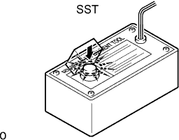

REAR NO. 1 SEAT OUTER BELT ASSEMBLY > DISPOSAL |
| 1. DISPOSE OF REAR NO. 1 SEAT OUTER BELT ASSEMBLY (WHEN INSTALLED IN VEHICLE) |
Check if SST is functioning properly.
Connect the red clip of SST to the positive (+) battery terminal and the black clip to the negative (-) battery terminal.
| *1 | Battery |
|  |
Press SST activation switch and check that the LED of SST activation switch illuminates.
Disconnect SST from the battery.
Disconnect the pretensioner connector.
Prepare SST for activation of the seat belt pretensioner.
Install the floor anchor of the seat belt.
Connect SST (A) to SST (B). Then connect the connector of SST (B) to the seat belt pretensioner.
Move SST at least 10 m (32.8 ft.) away from the rear of the vehicle.
| *a | 10 m or more |
Close all the doors and windows of the vehicle.
Connect the red clip of SST to the positive (+) battery terminal and the black clip to the negative (-) terminal.
Activate the seat belt pretensioner.
Confirm that no one is inside the vehicle or within 10 m (32.8 ft.) of the vehicle.
Press SST activation switch to activate the seat belt pretensioner.
Dispose of the rear seat outer belt (with the seat belt pretensioner).
| 2. DISPOSE OF REAR NO. 1 SEAT OUTER BELT ASSEMBLY (WHEN NOT INSTALLED IN VEHICLE) |
Remove the rear seat outer belt.
Wind the seat belt with the retractor.
When the seat belt is sufficiently wound, cut the seat belt approximately 100 mm (0.393 in.) from the retractor as shown in the illustration.
| *a | Cut Here |
Check if SST is functioning properly.
| *1 | Battery |
Prepare SST for activation of the seat belt pretensioner.
Connect SST (A) to SST (B). Then connect the connector of SST (B) to the seat belt pretensioner.
Place the rear seat outer belt on the ground and cover it with a tire (with wheel).
 |
Move SST at least 10 m (32.8 ft.) away from the wheel.
| *a | 10 m or more |
Activate the seat belt pretensioner.
Connect the red clip of SST to the positive (+) battery terminal and the black clip to the negative (-) battery terminal.
Check that no one is within 10 m (32.8 ft.) of the wheel.
Press SST activation switch to activate the seat belt pretensioner.
Dispose of the rear seat outer belt (with the seat belt pretensioner).
Remove the tire (with wheel) and SST.
Place the rear seat outer belt in a plastic bag, tie the end tightly and dispose of it in the same way as other general parts.